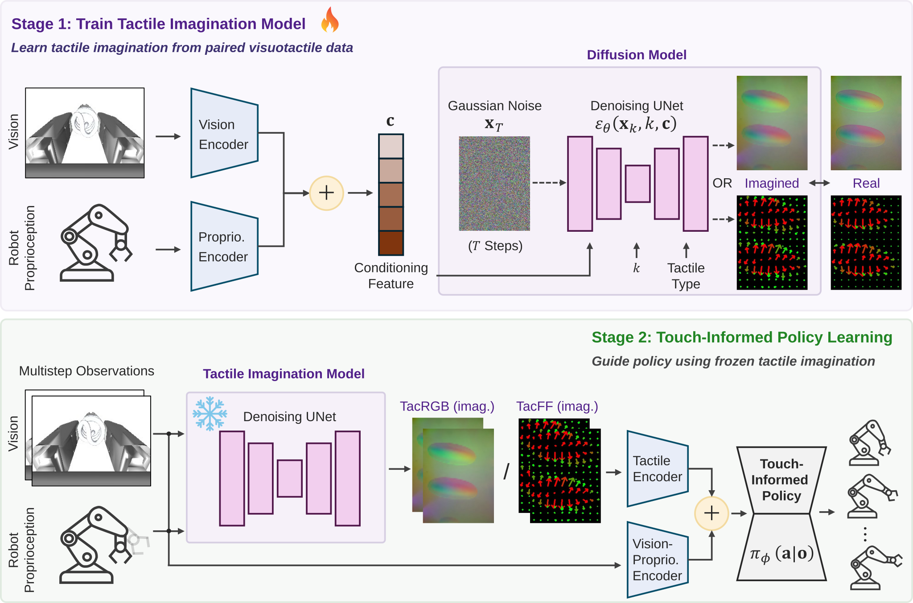

Purdue University | Texas A&M University
* Equal Contribution † Corresponding Author
TacImag improves both contact-sensitive and texture-sensitive manipulation by generating different imagined tactile representations according to the task requirement.
Imagined force-field tactile representation supports contact-rich control.
Imagined tactile images preserve task-relevant visual-textural cues.
TacImag uses a two-stage pipeline: first, a tactile imagination model learns to generate tactile observations from visual and proprioceptive inputs; second, a manipulation policy uses the imagined tactile representations as auxiliary observations during policy execution.

The tactile imagination model progressively denoises latent tactile observations and produces task-relevant tactile representations online.
Representative real-world deployments. Click a task button to switch videos.
TacImag performs contact-aware wiping using only visual observations and imagined tactile feedback at deployment.
During real-world deployment, the robot observes the scene through vision and proprioception, predicts tactile representations internally, and executes a tactile-conditioned policy without using physical tactile sensors.
No tactile sensor is used at test time. TacImag does not recover missing physical measurements directly; instead, imagined tactile observations provide contact-aware supervision that transforms subtle visual interaction cues into policy-friendly representations.
@article{zhang2026tacimag,
title={TacImag: Touch-Informed Manipulation through Imagined Tactile Representations},
author={Zhang, Zhiyuan and Desai, Adeesh Mahesh and Hu, Jyun-Chi and Saka, Yosuke and Luu, Quan Khanh and Lei, Jiuzhou and Soleymanzadeh, Davood and Zhang, Bihao and Zheng, Minghui and She, Yu},
journal={arXiv preprint},
year={2026}
}